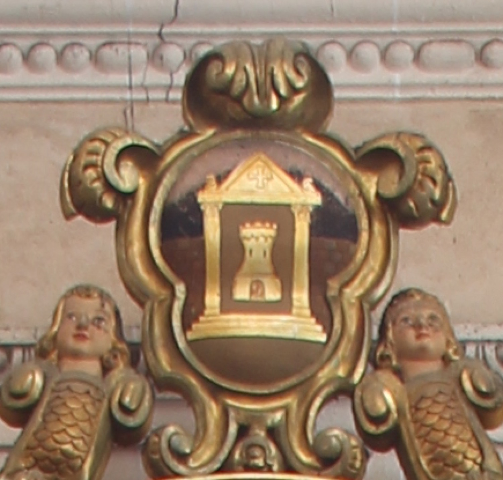

L’escut de Vilafranca de Bonany, adoptat en el moment de la creació del municipi l’any 1813, estava format per una torre emmarcada per un templet. La torre fa referència a aquella on santa Bàrbara, patrona de la vila, va ser empresonada pel seu pare.